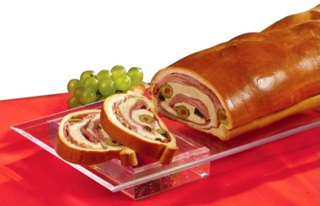

El Clasicomore_vert
El Pabellon Criollo: con sabor a Venezuelaclose
El pabellon criollo es un plato tradicional de Venezuela reconocido como el plato nacional por excelencia que forma parte de la gastronomia venezolana. El pabellon criollo tradicional esta compuesto por arroz blanco cocido, carne desmechada, caraotas negras "refritas" (guisadas y luego sofritas en mantequilla o aceite) tajadas de platano maduro frito. Aprende como hacerlo en nuestra seccion de recetas

Uno de los reyes de Navidadmore_vert
El delicioso Pan de Jamon: Uno que nunca falta en diciembreclose
Uno de los platos tipicos que nunca falta en nuestra mesa durante la navidad es el famoso Pan de Jamon!!! Si eres unos de esos fanaticos de la cocina casera, entra en nuestra seccion de recetas y aprende de los mejores a preparar un delicioso pan de jamon que dejara a todos chupandose los dedos y pidiendo mas!!!